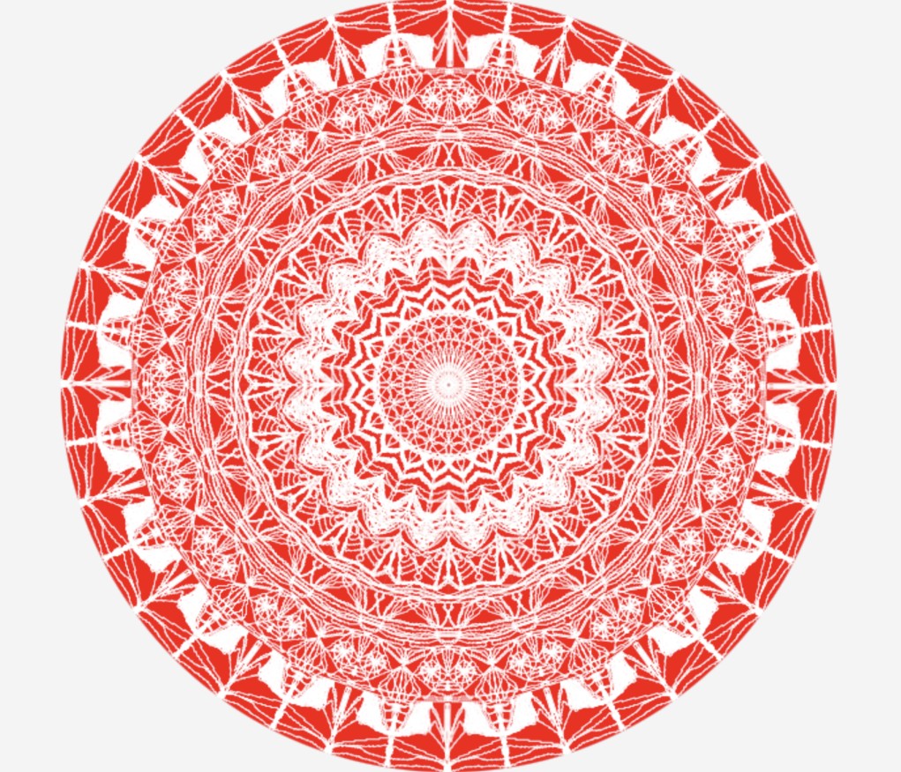
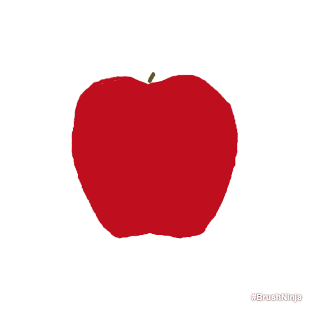

This is visual design page

This mandala art is from 9th grdade, we had the option of choosing whatever patterns we wanted and make it in whatever color we favoured.

For this assignment, we had the option to draw a realistic hand, and have varoius colors. I Personally decided use water paint to make the colors blend easily, this way the painting would look more realistic.

This is an assignment where we had to make a random doodle for our do now. I chose the draw this because I like the different shapes and sizes, and how it still looks similar to a mandala.

For this assignment, we had to use Brush.Ninja to learn how to make gifs.

For this assignment, we had the option to make an albam cover with any song of our choosing, I decided to use a ai website to make the imige of the women and use canva to make the cover page. The song I chose was "God is a Women" by Ariana Grande.

This is a Surrealist Collage Project. I added a black hole to the image and added a moon behind the baclkhole. I than added some planets. At the bottom I added two vivid solar systems.